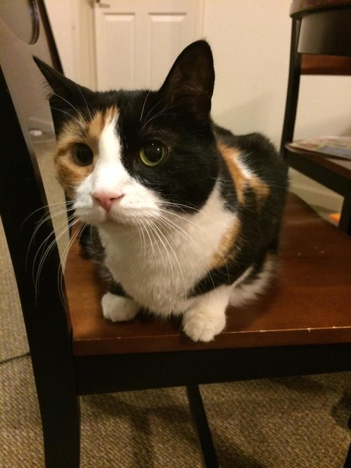
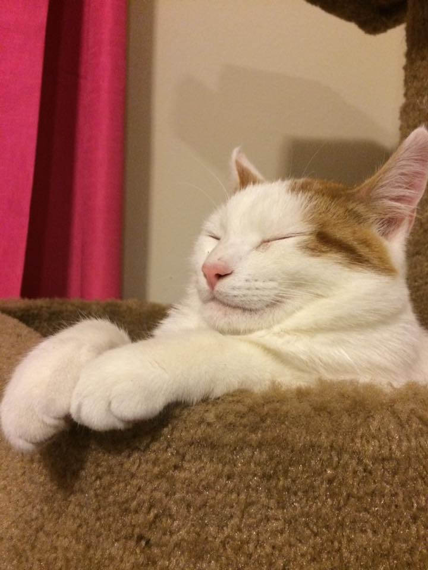
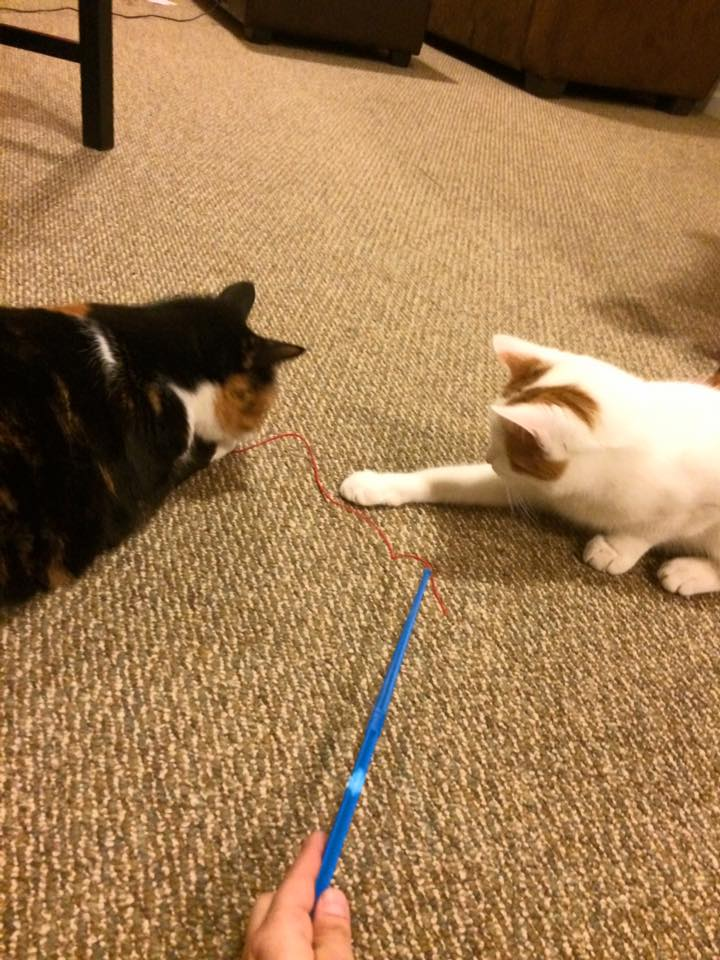

Since coming to school, I have started a life of my own in Maine. I got my own apartment sophomore year and have lived on my own ever since. I brought my family cat, Arcadia, with me so she could become my study buddy. Morty has recently joined the family, and I have found that he does not like studying very much. I spend most of my evenings playing with the cats after being gone most of the day at either school or work. I am currently a shift leader/bookkeeper at the Broadway Hannaford, where I began working in May of 2016. In the short time I have been there I have received three promotions, awarded service star of the month, and appeared in the company magazine for outstanding service. I plan on using the experience I gain with the company to springboard into a career in business management.
| Arcadia ~ 7 years | Morty ~ 17 months | Best Friends for Life |
|---|---|---|
|  |  |  |